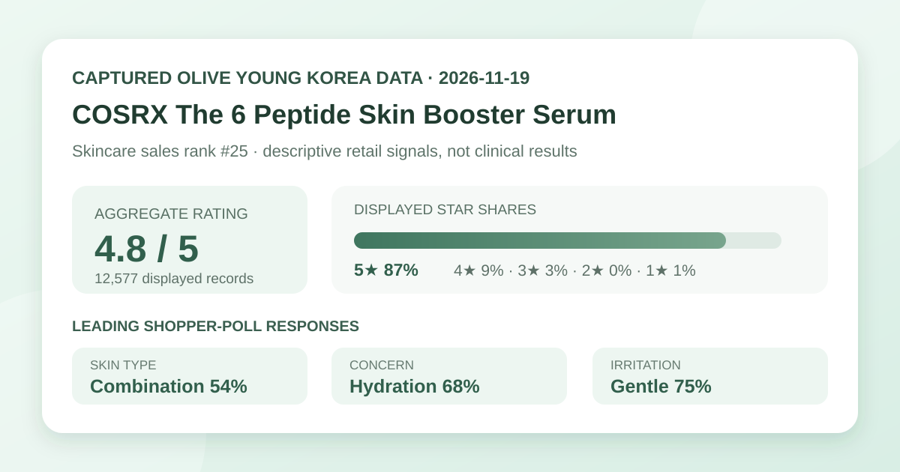
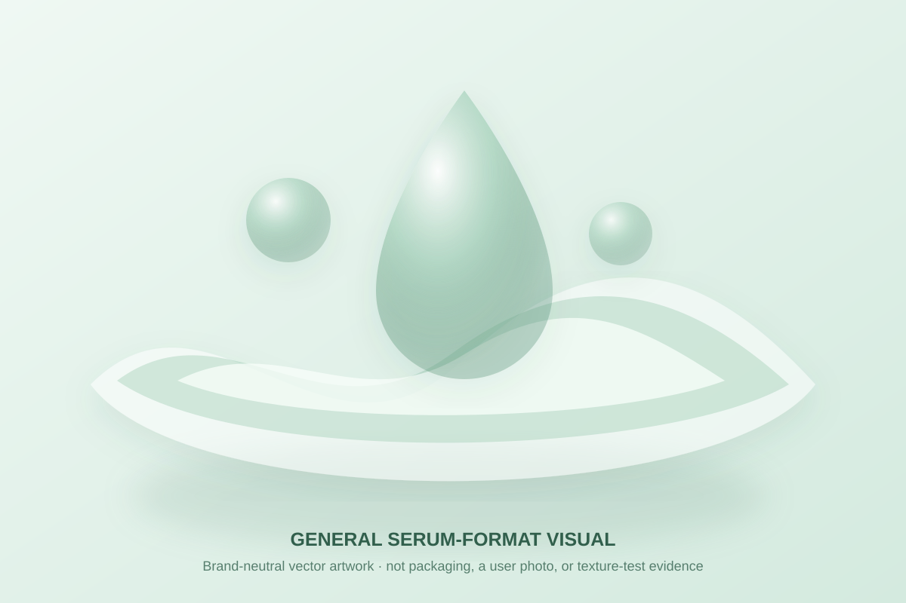

Data captured November 19, 2026. Olive Young Korea displayed “코스알엑스 더 6 펩타이드 스킨 부스터 세럼 더블기획.” This article uses “COSRX The 6 Peptide Skin Booster Serum” as a concise English label. It relies on the live ranking, product identity, aggregate rating, star shares, shopper polls, and retailer-generated anonymous summary. It does not copy or translate individual reviews, names, or photographs, and it makes no claim of firsthand use.

The short version: COSRX The 6 Peptide Skin Booster Serum appeared at number 25 in the captured skincare sales ranking. The ranking, product header, and official review view agreed on the identity, while the product header and detailed review statistics both showed 4.8 out of 5 from 12,577 records. Five-star ratings represented 87% of the displayed distribution. Combination skin led the skin-type poll at 54%, hydration led the concern panel at 68%, and gentle led the irritation panel at 75%. These are substantial storefront signals, not proof of absorption, hydration, compatibility, or a peptide-related treatment effect.
The official display showed 4.8 stars from 12,577 review records. This is a large storefront sample. It is useful for describing the direction and shape of feedback attached to this product family at the time of capture, and it reduces the volatility that comes with a page based on only a few responses.
That size does not turn retail feedback into a controlled trial. The records may span different purchase dates, bundles, prices, expectations, routines, climates, and packaging configurations. A retail average can reflect value, delivery, gifts, convenience, texture, packaging, and expectations as well as impressions of the formula. The interface did not expose a verified-buyer denominator or enough information to separate those influences.
The correct narrow conclusion is that the listing had a strongly favorable displayed rating across a substantial number of records. It does not establish the probability that the next buyer will like it, nor does it quantify any biological effect.
The official rows showed 87% five-star, 9% four-star, 3% three-star, 0% two-star, and 1% one-star. The rounded shares total 100%. This supports the 4.8 average while preserving a visible low-rating tail.
These are rounded percentages, not raw counts. Multiplying them by 12,577 would create false precision, and the zero-percent two-star row can still conceal a small number after rounding. The distribution is useful as a shape, not as an exact reconstruction of each rating bucket.
The displayed skin-type responses were 54% combination, 37% dry, and 9% oily. The rows total 100%. Combination skin was the largest represented group, but this is a description of respondents, not evidence that combination skin receives a better result.
Self-reported skin type is fluid and can change with season, cleansing, medication, hormones, climate, or active irritation. The platform did not display the poll denominator, so it may be smaller than the 12,577 rating base. These percentages should help readers understand who was represented, not predict fit.
The concern panel displayed 68% hydration, 26% soothing, and 5% wrinkle or brightening. The 99% total is consistent with whole-number rounding. Hydration was clearly the dominant response in the retailer's prompt.
This does not equal a measured 68% improvement. There was no corneometer result, transepidermal-water-loss endpoint, duration test, comparator, or standardized before-and-after assessment in the captured data. The soothing and wrinkle/brightening labels are likewise shopper responses, not treatment claims.
The irritation panel showed 75% gentle, 24% ordinary, and 2% felt irritation. Those rounded rows total 101%. The leading response is favorable, but the nonzero irritation row is a useful reminder that aggregate sentiment does not erase individual variation.
A 75% gentle response cannot screen for allergy, fragrance sensitivity, active dermatitis, a compromised barrier, prescription use, or interactions with exfoliants, retinoids, acne treatments, sunscreen, and makeup. Anyone with known sensitivities should check the current ingredient label and make an individual testing decision rather than treating a storefront percentage as a safety guarantee.
The retailer's automated summary labeled 91% of an undisclosed recent-review subset positive. Its broad grouped themes concerned use before later routine steps, moisture or reduced tight-feeling impressions, and a light, layerable feel including makeup-preparation context. This article records those categories only as anonymous aggregate topics.
The summary did not disclose its sample size, selection rule, classification model, error rate, or whether all records referred to the exact current bundle. It therefore cannot establish absorption, penetration, improved delivery of another serum, lasting hydration, or makeup wear. No individual reviewer sentence, username, profile, or image is reproduced or translated here.

“Skin booster serum” is the product's retail naming and routine-positioning language. In general skincare use, a thin serum or booster may be applied after cleansing or toner and before thicker leave-on steps. That broad convention does not verify this formula's viscosity, slip, absorption speed, finish, tack, pilling, or behavior with another product.
I did not open, spread, layer, or wear the formula. The local visual uses abstract translucent vector shapes and does not reproduce the bottle, liquid color, or a real swatch. Sensory behavior depends on the current formula, amount, application method, previous layers, skin condition, temperature, humidity, and what follows.
The name refers to six peptides, but a product title does not show their individual identities, concentrations, stability, delivery, or contribution to a finished formula. No ingredient assay, penetration study, controlled comparator, or independent current-formula audit was part of this capture. I therefore do not estimate a peptide percentage or infer a mechanism from the name.
Likewise, the retailer summary's “booster” theme cannot demonstrate that another serum or ampoule absorbs better. That would require a defined protocol, measured endpoint, comparison condition, and transparent analysis. Readers seeking current ingredient or allergen details should consult the package or brand's current regional disclosure.
Rank 25 describes one capture of Olive Young Korea's skincare sales list. It is not a clinical ranking or a claim that the product is the twenty-fifth best treatment. Advertising, inventory, discounts, gifts, influencer exposure, seasonality, and short-term demand can move a listing quickly.
The captured product was a double-plan listing shown at a ₩46,000 reference price and ₩29,900 promotional price. Those details can change independently of the review aggregates. Before purchase, confirm the current seller, formula, volume, bundle contents, stock, expiry information, return terms, and checkout price on the live page.
COSRX The 6 Peptide Skin Booster Serum had a coherent captured storefront profile: rank 25, a 4.8 average from 12,577 records, an 87% five-star share, 54% combination-skin representation, a 68% hydration response, and a 75% gentle response. The large rating base and internally consistent product and review screens make these descriptive signals worth noting.
The evidence boundary matters just as much. These figures do not verify peptide concentration, prove hydration, demonstrate absorption, predict makeup compatibility, or guarantee tolerance. The best use of this snapshot is to inform a shortlist and generate better questions before buying—not to replace current-label checks, personal compatibility testing, or controlled evidence.
Source: Olive Young Korea product listing and official aggregate review statistics, captured November 19, 2026. Open the source product page.
← Back to all analyses · Review-volume rankings · Skin-poll representation